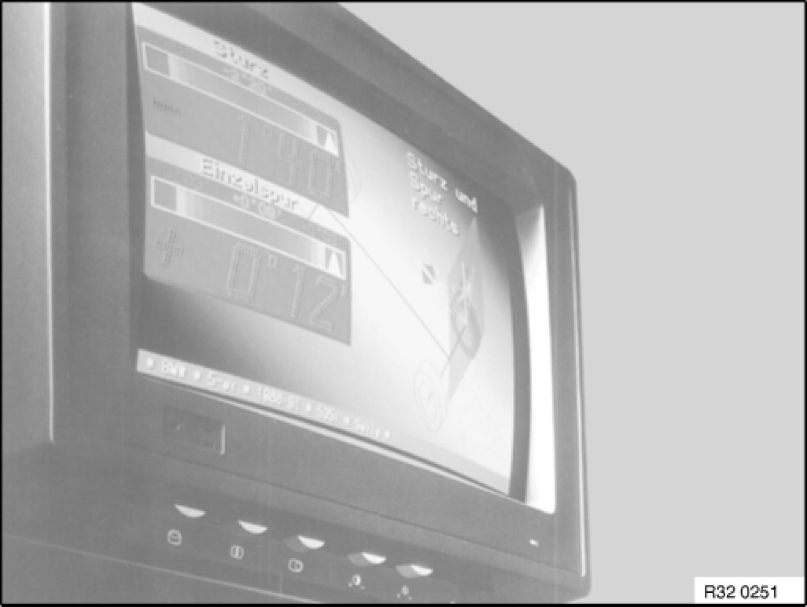

1. Foreword
1. Foreword
1.1 Objectives
Wheel alignment has become an increasingly complex subject. The aim of this BMW Service Technology bulletin, therefore, is to achieve several objectives:
- Creation of guidelines for working with the BMW Kinematic Diagnosis System (KDS).
- Familiarisation with wheel alignment technology for current vehicles and clarifying any questions which arise in this connection.
- Transparency and clarification of different terms.
- Clarification of the causes of errors in the past, such that they can be avoided after reading this document.
- Creation of conditions for dealing safely with the BMW KDS.
1.2 Further development of the BMW Kinematic Diagnosis System
- The BMW Kinematic Diagnosis System is an integrated part of automotive system concepts. It ensures that work is carried out in a particularly rational manner which is appropriate for BMW requirements, such that you can also be certain of being prepared for future technological developments. As far as precision and performance in wheel alignment and tuning is concerned, BMW, together with leading manufacturers, has made the best of what is technically feasible: the BMW Kinematic Diagnosis System.
- The BMW Kinematic Diagnosis System manufactured by Beissbarth is more than just the further development of conventional wheel alignment equipment. It sets new standards in precision, performance, speed and handling. It is a guarantor for the perfection which BMW service customers rely on.
- Ride comfort, road safety and tyre wear depend to a large extent on the perfect interplay of the vehicle's kinematic functions. BMW is constantly launching new generations of chassis which are even better than their predecessors. This is why there are fewer kinematics system adjusting points and narrower tolerances when measuring and tuning the chassis.
- With the use of the multi-link rear suspension and the E36, the electronic wheel alignment devices are no longer suitable for BMW wheel alignment purposes. This applies to both the measuring procedure and measuring precision. The generation of equipment which was approved with the E36 series still fulfils all the requirements placed on a modern wheel alignment device, including the use of the latest computer technology.
- Only BMW Kinematic Diagnosis Systems manufactured by Beissarth and Bosch may be used for wheel alignment.
1.3 Technical Data

1.4 Scope of delivery
1 - PC display device with graphic screen, graphical tablet, small or large equipment cabinet including automatic charging station, DIN A4 dot matrix printer
4 - Measuring sensors with CCD camera technology and infrared data transmission with built-in power supply
1 - Cable set (comprising 4 cables)
1 - Brake clamping device
1 - Steering lock device
2 - Electronic precision rotating plates with integrated sensor without access ramps
2 - Sliding plates without access ramps
4 - BMW quick-clamping units, comprising a P8-68 locating bell and P267 01 quick-acting clamp including coated holding claws
1 - Operating instructions for BMW KDS (8 languages)
1 - BMW software and the BMW vehicle setpoint data with setting screens as well as text for the measurement preparations
1.5 Accessories required
2 - Locating rods for positioning the vehicle
1 - Set of sand bags for the prescribed loading
1.6 Accessories recommended
4 - Quick-clamping units
2 - Sets of access ramps
1 - Remote control / display
1 - Trolley (for ballast bags, rotating and sliding plates and 4 quick-acting clamps)